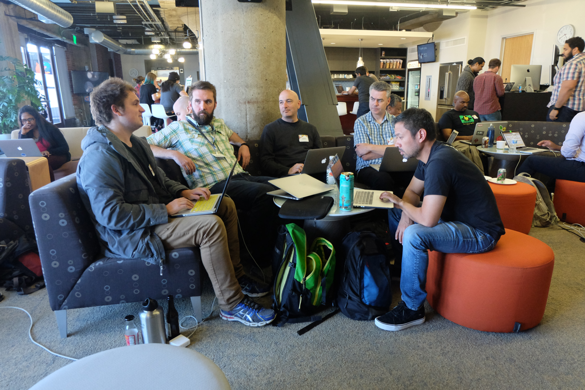
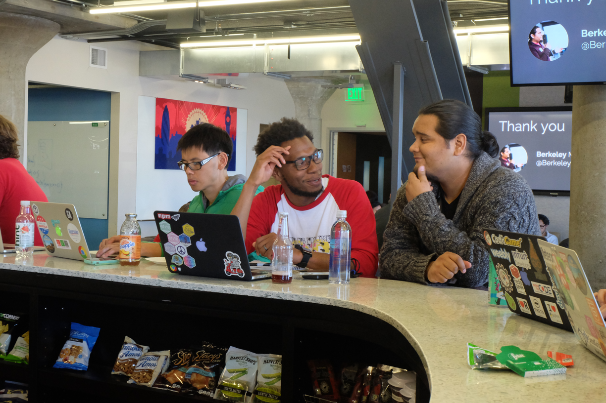

Thanks for coming to "Nodeschool: A Chapter in the Making".
NodeSchool: A Chapter in the Making
or: Node's Cool at NodeSchool
A talk by Lydia Kats
Node Interactive Europe, September 2016
Watch the talk on Youtube.
Download the slides (pdf, 2.3MB).
Node's Cool at NodeSchool
I feel like I always come up with a better talk title way after submitting my abstracts, so the alternate title for this talk is "Node's Cool at NodeSchool".
@llkats
My name is Lydia, I'm @llkats everywhere online.
I’m a front-end developer at craigslist, a classified ads site in the US. so what is a front-end dev doing at a largely enterprise-focused node conference?
In my spare time, I’m a co-organizer at the San Francisco chapter of Nodeschool, and today I want to give you some background on NodeSchool’s origins, what it was like to start our local chapter and some challenges we’ve come across in the two years of running it, and some potential ways forward for the organization as a whole.
NodeSchool origins
NodeSchool is a decentralized, open-source community. Its mission has two goals: to create high quality programming curricula and to host community learning events.
how NodeSchool started
For some history, I listened to the NodeUp podcast episode 55, where Mikeal Rogers, Max Ogden, Jessica Lord, and Rod Vagg all talked NodeSchool for the whole episode.
NodeSchool started as a series of Node modules that people wrote in order to facilitate code workshops at a series of events in 2013.
James Halliday, who you might know better as substack, made the first workshopper called stream-adventure to teach people about streams for NodeConf 2013. Rod Vagg liked that it was interactive and hands-on, and made the learnyounode module for CampJS, a JavaScript conference in Australia. The idea caught on and levelmeup was soon created as a way to teach LevelDB.
The NodeSchool modules were created to be taught at specific events or meetups, but it was immediately apparently that they could be reused again and again, or even followed by a person on their own.
After they had a few of these modules, Max Ogden was talking to another developer named Brian Brennan at NodeConf EUabout how to take the concept further. Max came up with the name “nodeschool”, and Brian bought the domain right away that night.
nodeschool.io
nodeschool.io is the central hub and homebase for nodeschool online.
Its goal: “grow the node community and teach people some fundamental skills” – Max
substack and Max did the initial frontend on the first nodeschool.io homepage, and Max said I should show a screenshot...
So here it is in glorious Internet Archive Wayback Machine vision: the old nodeschool homepage.
Max told me that in the early days of the site, "before chapters, it was mostly workshop authors adding their workshops to the website and people adding their nodeschool events to the google spreadsheet that rendered the map on the site.
A while later Jessica Lord helped Max redesign the current homepage.
Which is the current homepage that you see today.
As the organization grew, Max came up with the idea for ‘chapters’ as location-specific, recurring meetups, and he launched the chapters feature on the website.
With growth came complexity, and Mathias Buus, @mafintosh on GitHub, wrote a bot to automate tasks in the repo. Along the way lots of other people helped out Rod and Substack out with workshopper modules themselves, and still many others helped with the main nodeschool website. It was truly a group effort, and they helped create about 100 new chapters at least in the first year.
Max told me that they designed the repo so that each chapter is in control of its GitHub team and its GitHub pages site, so theres little to no bottlenecks or maintenance needed by the people who work on the core nodeschool.github.io domain. He said that giving each chapter control of their own website and presence under the NodeSchool GitHub organization was “the key thing that [he thought] made it work as a decentralized group that can grow quickly. one of the challenges [they] faced is… [their] work on internationalization in both the website and the workshoppers. Martin Heidegger really led the charge there working with NodeSchool Osaka” and you can see the variety of languages at the top of the site itself that someone can choose from. so it was truly global in its focus from the beginning.
Jessica also made the hexagon logo and made a template so that people could add their own location abbreviation to it and make stickers really easily and have swag for their attendees. Stickers are basically a necessity these days for tech meetups anyhow, so it was just another way to help organizers get their events all official and stuff.
the start of NodeSchool SF
- NodeSchool SF started in the same way that all chapters start nowadays, with an issue on GitHub.
In December 2014, Andrew Duquet, who was working at NerdWallet at the time, created the issue in the NodeSchool organizers repo. He actually had very little node experience when he first created the issue, which was really cool that he felt empowered to do that.
https://GitHub.com/nodeschool/organizers/issues/92
Max Ogden pinged some people he knew in the area to help; I was one of them, and happy to jump on board. My now co-organizer, Reza Akhavan, was also participating in the discussion.
As we got started, the documentation in the NodeSchool org and wiki were really helpful, and a bunch of people chimed in to give advice. As an initial website, I forked the NodeSchool Campinas site at the suggestion of Filipe Oliveira (@fmoliveira) and made a few tweaks and went live. Reza made the twitter account, and we created the initial logo from the logo builder that Nodeschool has online.
the very first NodeSchool SF
image credit: Noelle Daley, @elnoelleHere’s some proof of our first event! And since then, almost every picture of an active event that we’ve taken looks kinda like this – a bunch of people in a room, on computers, getting help from other people.
that’s sort of the entirety of the event. it’s a casual gathering where people work at their own pace on the nodeschool materials. if someone gets stuck, or has more questions, they can just raise a hand and a mentor comes by to offer assistance. self-paced, no-pressure, social learning.
how the chapter is sustained
- company sponsorship
- evolving identity
We’ve been holding NodeSchool SF almost every month for two years now. and that sort of regularity comes with a lot of effort.
Having Mozilla as our monthly sponsor means less logistical overhead for us as organizers, as well as a consistent homebase for our attendees.
Reza also redesigned our homepage and our stickers. We thought about the identity we wanted for the chapter and eventually settled on the rainbow as the identifying color scheme, since San Francisco a history of supporting and accepting LGBTQ and all sorts of folks, and that sort of sense of welcoming acceptance is a core part of the chapter’s identity, we want everyone to come and feel welcome at our events.
To that end, we also reiterate information about our Code of Conduct policy at the beginning of each event, to underscore and inform our attendees that harassing or offensive behavior will not be tolerated, in order to foster a safe and comfortable learning environment.
how the chapter is sustained
- community of mentors
- format innovation
Community of mentors: we have a steady pool of mentors in the area. There are a lot of repeat mentors, though I have to shout out Rich Trott, who’s a Node core contributor, he’s mentored with us at every single event since it started in February 2015 because he’s amazing. Experienced Node developers in the Bay Area offer the time they have to spare, whether it’s for one event or several. That sort of dependable community has been awesome to tap into.
Format innovation: we’ve also tried playing with our format, like offering other lessons; focused sessions where attendees are more formally guided by a leader, teaming up with nodebots, etc.
And of course, I couldn’t do any of this without my amazing co-organizer Reza, whose energy and ideas and steady work makes all of it possible, and I know that he leans on me for help and work in the same way. Spreading out the work of logistics and organization with a team you can depend upon is crucial for the success of a NodeSchool chapter.
It also helps if you get a cake that’s decorated the same as your sticker logo too. That cake was amazing.
in-person events help students



NodeSchool is as much a space to network and build relationships as it is a place to learn how to code, to meet other people at your level, or learn how to help others and become a mentor.
Students learn how to teach – they become mentors in turn, if they’re interested. or they learn how to public speak and lead sessions. Attendees at SF have met people through whom they got jobs, not by being recruited, but by expanding their network. Face-to-face contact presents people with opportunities they can’t have any other way.
growing pains
There are some growing pains, though NodeSchool has grown really well for three years now, so instead I’ve been thinking of these challenges more as…
maintenance pains
...maintenance pains. Now that we’ve been running our meetup for two years, it’s a little easier for us at NodeSchool SF to look beyond our chapter and appraise the current landscape of NodeSchool as an organization.
maintenance pains
Martin Heidegger’s post The missing hands at NodeSchool
- workshopper quality
- learning materials have a high barrier to entry
- lack of direction
Martin recently wrote a Medium post about ways NodeSchool can improve, including translation and overall organization structure. I have a little overlap in this next section, but I also encourage you to read his post about ways to pitch in with NodeSchool.
The three main challenges I want to highlight in running a NodeSchool meetup are that workshopper quality has degraded over time, that our learning materials have a high barrier to entry for true novices, and an overall lack of organization-level direction.
workshopper quality has degraded
But before I jump in to outlining these challenges…
what even is a workshopper
…I better back up and explain workshoppers in more detail.
what even is a workshopper
This is the core learning material for NodeSchool: command-line modules that contain related lessons. This is a screenshot from learnyounode which teaches fundamental node concepts. It has kind of an old-timey CRT monitor DOS feel to it. The lessons range from I/O and async concepts to writing simple HTTP servers.
to complete a lesson, a student has to write code and then run it against the workshopper’s tests
what even is a workshopper
if you don’t pass, you get an error message and output to look at and compare against the expected output. A lot of workshopper tests match on randomly generated strings to make sure that the transformation logic is correct.
what even is a workshopper
and when you do pass, you get a nice green PASS message, and some workshoppers like learnyounode offer the “official” output so you can compare how you implemented your solution.
workshopper quality has degraded
If you remember the screenshot of the very first nodeschool website, there were all of three workshoppers to choose from.
workshopper quality has degraded
now there’s a few more than that, so many that eight are labeled as the “core” curriculum and the rest are electives on special topics like react, functional programming, promises, and WebGL. and with so many workshoppers has come a certain amount of quality degradation over time as maintainers get busy or move on to new projects, they may not have the time or capacity to triage issues or accept pull requests. some workshoppers, even core curriculum ones, have dozens of open PRs and issues. we even tried having a couple of mentor hack nights in SF, but the problems with that approach were that it was difficult to know where to get started, and that even if the group created a few PRs for a workshopper, there wasn’t any faith that they would actually get merged.
learning materials have a high barrier to entry
another challenge we face is that it can be fairly difficult to even get going with these learning materials, especially as a very fresh beginner. you need to have an IDE or text editor of some sort set up and you have to figure out how to execute commands on the terminal. if you have newly installed node, you might get the EACCESS error when you try to install a workshopper module globally. these are difficulties that mentors are great at assisting with, but it remains a point of friction for beginning programmers.
lack of direction
and finally, there doesn’t feel like there’s an overarching goal or direction for the event or the organization. though we’re a global organization, chapters still feel fairly siloed from each other.
on the one hand, this lets people mold it into what fits the needs of their community
on the other, it can feel amorphous for new chapters to start or continue; there’s a lack of direction for improvement; difficult to understand the needs not only of attendees, but of organizers and mentors, the people who run nodeschool
moving forwards
so, with all that said about some of the maintenance pains we face, how do we try to fix some of these challenges?
moving forwards
- empower NodeSchool contributors
- provide alternate methods to access workshoppers
- pick organization goals
I think that some of the answers lie in giving more power and merge permissions to NodeSchool contributors, in providing alternate methods to access the learning materials, and picking a few organization goals for people to work towards.
empower contributors
move workshoppers to a NodeSchool organization
first, we should empower contributors by moving workshoppers to an organization where NodeSchool members have permission merge PRs I think that, at the very least, the eight core workshoppers should be hosted or forked into a location that nodeschool contributors can actively maintain them. Once people are confident their pull requests can get merged, I think that we’ll have a lot more volunteers for updating content. this way, discussion and organization around priorities and standards or quality for each workshopper can also happen in their respective repositories. we could also define over-arching standards, like a consistent code style for every workshopper.
make workshoppers more accessible
there are tools out there to potentially make workshoppers more accessible.
make workshoppers more accessible
git-it workshopper by Jessica Lord
Jessica’s first version of the git-it workshopper, which teaches how to use git and GitHub, was a module in the terminal. But she recently revamped it as an electron module, where the guide and exercises are all self-contained. The only other thing needed is a text editor. This interface can be a little more approachable for people
make workshoppers more accessible
Maintain command-line modules for people who are comfortable using the terminal and already have their IDE set up but for people who are not as familiar, an environment like Cloud9 could be an all-in-one solution that avoids having to make students download modules, configure file permissions, or worry about where they are saving files. It’s definitely not the same as having a whole environment set up, or learning about that workflow holistically, but if a student’s goal is to learn some programming skills that day, it could ease the whole overhead of setup for that event. Additionally, if we wanted to be able to support people who can’t bring a laptop, it might ease the difficulty of having to borrow a computer. Cloud9 is definitely not a panacea, but it could be a useful tool in specific cases.
more suggestions
- survey attendees and mentors
- organize and prioritize tasks
- cross-pollinate (üëã NodeTogether)
We recently surveyed NodeSchool SF attendees, and while I haven’t gotten a representative sample yet, there have already been some interesting suggestions for things to improve with our own events. as an organization, we could survey and measure needs and wants as well.
nodeschool is 100% volunteer-run. It’d be really helpful to break tasks down into things that people can feasibly take on in an evening or weekend, since we’re all busy folks with lives outside of work and nodeschool as well. once people are aware of the organization’s goals, once we can agree what to work on, I think that contributions will follow.
explore how other groups are teaching programming, their methods and motives, and see what we can learn from them. NodeTogether and Railsbridge are two groups that spring to mind.
and these are just a few ideas. I know a lot of really smart people have other ideas too - we need to bring them all together somehow.
the effort you need to start something is different than the effort you need to maintain it
in all, I’ve come to realize that the effort you need to start something is different than the effort you need to maintain it
once you have the content and the organization together, what’s next? I think that’s the question we’re asking ourselves as we continue working with NodeSchool events.
give a community a framework they’ll go out and teach the world
In closing, you might know the saying, “Give someone a fish, and you feed them for a day. Teach someone to fish, and you feed them for a lifetime.” What I’ve learned from NodeSchool is that if you give community a framework for education, they’ll go out and teach the world. That’s a remarkable fact about the JavaScript community. We will to continue to think of ways to maintain and grow the utility of NodeSchool, which is already off to such a great start. I feel lucky to be a part of it.
shoutouts
- Max Ogden @denormalize
- Brian Brennan @brianloveswords
- Noelle Daley @elnoelle
Just a few quick shoutouts to people who have helped me with this talk, with content, information, and advice
shoutouts
James Halliday (@substack), Rod Vagg (@rvagg), Jessica Lord (@jllord), Martin Heidegger @leichtgewicht, Mathias Buus (@mafintosh), Reza Akhavan (@jedireza), Andrew Duquet (@duquet), Filipe Oliveira (@fmoliveira), and all NodeSchool organizers, contributors, mentors, and attendees worldwide
And to a few exceptional people who have made NodeSchool and NodeSchool SF what it is today
thanks! <3
and to all of you for listening, I hope you take a look at what we’re doing over at NodeSchool and help us grow the Node community by teaching the world. Thanks!